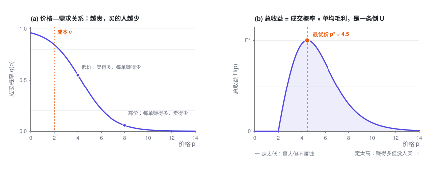
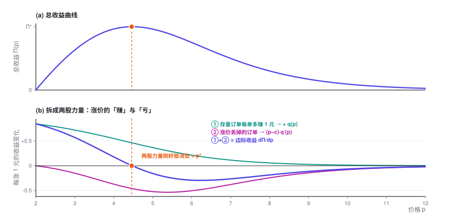
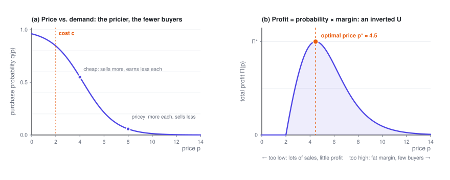
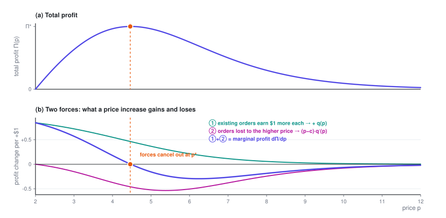

单对象定价优化
只有一个数要定。价格往上抬，每一单赚得更多，买的人却更少——利润走出一条倒 U 曲线。这一篇把顶点的位置算出来，并给出一个不用计算器也能估的基准。
定价专题 · 第 1 篇 / 共 4 篇 · 阅读约 12 分钟
← 已是第一篇 · 专题目录 · 多对象定价与业务约束 →
这是「定价优化入门」的第一篇。不需要任何前置知识，只要你接受「东西越贵，买的人越少」这个事实。
本篇会用到的符号
| 符号 | 含义 |
|---|---|
| p | 价格，决策变量 |
| c | 单位成本，已知常数 |
| q(p) | 成交概率 / 转化率，随 p 单调递减 |
| k | 价格系数，越大表示价格一动、转化率掉得越快 |
| \Pi | 总收益（本专题统一指毛利，不是流水） |
| q_0 = 1-q | 不成交概率 |
完整符号表见专题目录。
1. 把问题写下来
只有一个定价单元。它有一条自己的价格—需求关系：价格越高，成交概率越低。
成本 c 固定。那么总收益是
这个式子里有一对天然的矛盾：
- 涨价 → 每单赚得多（p-c 变大）
- 涨价 → 成交的人变少（q 变小）
两者相乘，通常是一条倒 U 曲线：太便宜不赚钱，太贵没人买，中间某处有个最高点。

2. 求最优解
对 p 求导，令导数为零：
这两项各有清楚的含义：
- ① q(p)：价格每涨 1 元，已经成交的那部分订单每单多赚 1 元，总共多赚 q。这是好处，恒为正。
- ② (p-c)q'(p)：价格每涨 1 元，丢掉 |q'(p)| 那么多订单，每丢一单损失一份毛利 (p-c)。这是代价，只要价格高于成本，它就是负的。
最优价，就是这两股力量恰好抵消的那个点。

整理一下，就得到最优价满足的一般条件：
读作：最优价 = 成本 + 一个加价项，而
这很符合直觉：转化率下降得越慢（客户越不在乎价格），加价空间就越大。
同一个式子在广告拍卖里出现过两次：平台定底价，就是成本为 0 时的这个问题；买方在一价拍卖里的最优出价 b^\star = v - w/w' 则是它的镜像，在价值上压价，而不是在成本上加价。见出价专题第 1 篇。
3. 两个具体例子
上面是一般形式。代入具体的需求函数，就能得到真正能算的公式。
例 1：线性需求
代入目标函数：
这是开口向下的抛物线，求导：
二阶导 \frac{d^2\Pi}{dp^2} = -2b < 0，确实是极大值。
这个结果有个漂亮的说法。记 p_{\max} = a/b 为「零需求价」（价格涨到这里，就完全没人买了），则
最优价恰好是「成本」和「零需求价」的中点。 这是一个非常好用的心算基准：如果你能估出「多贵就完全卖不动了」，最优价大约就在它和成本的正中间。
例 2：Logit 需求（更接近真实）
线性需求有个毛病：价格再高一点，q 会变成负数。实践中更常用 Logit 形式：
其中 \sigma(\cdot) 是 sigmoid 函数，b_0 决定基础吸引力，k > 0 是价格系数。它天然落在 (0,1) 内，且单调递减。
它有一个极好用的导数性质：
展开：这一步怎么来的
令 z = b_0 - kp，则 q = \sigma(z) = \frac{1}{1+e^{-z}}。
sigmoid 的经典性质是 \sigma'(z) = \sigma(z)\bigl(1-\sigma(z)\bigr)：
再用链式法则，\frac{dz}{dp} = -k：
代入一阶条件 q + (p-c)q' = 0：
两边除以 q（q > 0，可以除）：
其中 q_0 = 1 - q 是不成交概率。
这是个隐式方程（右边还含着 p^\star），不过它只有一个未知数、而且单调，二分法或牛顿法几步就能收敛，工程上完全不是问题。
4. 这几个公式在业务里怎么读
读法一：k 越大，加价越小。
k 是价格系数。k 大 = 客户对价格敏感 = 曲线陡 = 稍微涨一点就掉一大片量。这时候公式告诉你老老实实少加价。反过来，对价格不敏感的场景（刚需、无替代、紧急需求），1/k 大，加价空间就大。
读法二：q_0 出现在分母，说明「当前卖得怎么样」会反过来影响该定多少钱。
这里容易读岔，多说一句。假如你现在的价格下几乎人人都买（q \to 1，q_0 \to 0），公式给出的加价趋于无穷大 —— 这不是公式坏了，而是它在喊：你价格定得太低了。涨价之后 q 会掉下来、q_0 会涨上去，加价项随之变小，最优价落在两者平衡的地方。所以别把它当成一步到位的公式：右边含着 p^\star，要用上一节说的二分法或牛顿法去解。
读法三：结果对「成本」怎么算很敏感。
c 到底算哪些？只算变动成本，还是要分摊固定成本？这个选择会直接改变最优价。一般来说，做短期定价决策时 c 应该只包含边际成本（多成交一单额外多花的钱）。把固定成本摊进去再去优化，会系统性地把价格定高、把量做小。
5. 落地时会踩的坑
- 曲线不是天上掉下来的。 上面所有推导都建立在「你知道 q(p)」这个前提上。这个前提比看上去难得多，本专题第四篇会展开说。
- c 可能不是常数。 很多业务里成本随量变化（规模效应、阶梯运力、库存分档）。这时 \Pi = q\cdot(p - c(q))，要重新求导，但框架不变。
- 别忘了检查二阶条件。 一阶导为零只说明是驻点。Logit 需求下 \Pi(p) 对 p 未必处处是凹的，但它是单峰的，所以一阶条件的解就是全局最优。
展开：一个能让后面所有算法都变简单的技巧 —— 换个变量，问题就凹了
\Pi(p) 对 p 不一定凹，这会让优化算法不好写。但如果把决策变量从「价格」换成「转化率」，问题立刻变成严格凹的。
从 q = \sigma(b_0 - kp) 反解出价格：
代回目标函数：
第一项是 q 的线性函数。只要证明 f(q) 是凸的，\Pi(q) 就是凹的：
所以 \Pi''(q) = -f''(q)/k < 0，严格凹。
这个变换的实际价值：一旦问题在 q 空间是凹的，就可以直接上凸优化求解器，全局最优有保证，也不用担心初值和局部解。第三篇的拉格朗日推导之所以那么干净，本质上也是因为这个结构。
定价专题 · 第 1 篇 / 共 4 篇
← 已是第一篇 · 专题目录 · 多对象定价与业务约束 →
Pricing a Single Product
One number to set. Raise the price and you make more on each sale, but fewer people buy — so profit traces an inverted U. This post finds the top of that curve and gives you a benchmark you can estimate without a calculator.
Price Optimization · Part 1 of 4 · 12 min read
← First part · Series index · Pricing Many Items Under Constraints →
This is the first post in A Primer on Price Optimization. No background is needed — just the fact that the more something costs, the fewer people buy it.
Symbols used in this post
| Symbol | Meaning |
|---|---|
| p | Price, the decision variable |
| c | Unit cost, a known constant |
| q(p) | Purchase probability / conversion rate, decreasing in p |
| k | Price coefficient: the larger it is, the faster conversion drops when the price moves |
| \Pi | Total profit (gross margin throughout this series, not revenue) |
| q_0 = 1-q | Probability of no purchase |
The full notation table is in the series index.
1. Setting up the problem
There's a single pricing unit, with its own price–demand curve: the higher the price, the lower the chance of a sale.
With a fixed unit cost c, total profit is
There's a built-in tension in this formula:
- Raise the price → you make more on each order (p-c grows)
- Raise the price → fewer people buy (q shrinks)
Multiply the two and you usually get an inverted U: too cheap and you don't make money, too expensive and nobody buys, with a peak somewhere in between.

2. Finding the optimum
Differentiate with respect to p and set the derivative to zero:
Each term has a clear meaning:
- ① q(p): each extra dollar of price earns one more dollar on the orders you were already getting — q in total. This is the gain, and it's always positive.
- ② (p-c)q'(p): each extra dollar of price loses |q'(p)| orders, each of which was worth a margin of (p-c). This is the loss, and it's negative whenever the price is above cost.
The optimal price is the point where these two forces exactly cancel out.

Rearranging gives the general condition the optimal price has to satisfy:
In words: optimal price = cost + a markup, where
This matches intuition: the more slowly conversion falls (the less customers care about price), the more room you have to mark up.
The same formula shows up twice in ad auctions. A platform setting a reserve price faces exactly this problem, with a cost of zero; and a buyer's optimal first-price bid, b^\star = v - w/w', is its mirror image, shading down from value instead of marking up from cost. See Part 1 of the ad bidding series.
3. Two worked examples
That was the general form. Plug in a specific demand function and you get a formula you can actually compute.
Example 1: linear demand
Substitute into the objective:
This is a downward-opening parabola. Differentiate:
The second derivative is \frac{d^2\Pi}{dp^2} = -2b < 0, so this is indeed a maximum.
There's a neat way to put this. Let p_{\max} = a/b be the "zero-demand price" (at this price, nobody buys at all). Then
The optimal price is exactly halfway between your cost and the zero-demand price. That makes a very handy mental benchmark: if you can estimate the price at which nothing sells anymore, the optimal price is roughly midway between that and your cost.
Example 2: logit demand (closer to reality)
Linear demand has a flaw: push the price a little higher and q goes negative. In practice, the logit form is more common:
Here \sigma(\cdot) is the sigmoid function, b_0 sets the baseline appeal, and k > 0 is the price coefficient. It naturally stays within (0,1) and decreases with price.
It has a very convenient derivative:
Show: where this comes from
Let z = b_0 - kp, so that q = \sigma(z) = \frac{1}{1+e^{-z}}.
The sigmoid has the classic property \sigma'(z) = \sigma(z)\bigl(1-\sigma(z)\bigr):
Then apply the chain rule, with \frac{dz}{dp} = -k:
Plug this into the first-order condition q + (p-c)q' = 0:
Divide both sides by q (fine, since q > 0):
where q_0 = 1 - q is the probability of no purchase.
This is an implicit equation (the right-hand side still depends on p^\star), but it has a single unknown and is monotone, so bisection or Newton's method converges in a few steps. In practice, it's a non-issue.
4. Reading the formulas in business terms
Reading 1: the larger k, the smaller the markup.
k is the price coefficient. A large k means price-sensitive customers, a steep curve, and a big drop in volume from even a small price increase — so the formula tells you to keep the markup modest. Conversely, when customers don't much care about price (must-haves, no alternatives, urgent needs), 1/k is large and so is the room to mark up.
Reading 2: q_0 sits in the denominator, so how well you're selling right now feeds back into what you should charge.
This one is easy to misread, so it's worth spelling out. Suppose almost everyone buys at your current price (q \to 1, q_0 \to 0). The formula then calls for an almost infinite markup. It isn't broken — it's telling you that your price is too low. Once you raise the price, q falls, q_0 rises, and the markup the formula asks for shrinks; the optimum is where the two meet. So don't treat it as a one-shot formula: the right-hand side depends on p^\star, and you solve it with bisection or Newton's method, as in the previous section.
Reading 3: the answer is sensitive to how you count cost.
What goes into c? Only variable costs, or allocated fixed costs too? That choice moves the optimal price directly. As a rule, for short-term pricing decisions c should include only marginal cost — the extra cost of making one more sale. Folding fixed costs in before optimizing systematically pushes prices too high and volume too low.
5. Pitfalls in practice
- The curve doesn't fall from the sky. Every derivation above assumes you know q(p). That's much harder than it looks; Part 4 goes into it.
- c may not be constant. In many businesses cost changes with volume (economies of scale, tiered capacity, inventory tiers). Then \Pi = q\cdot(p - c(q)), and you need to redo the derivative, but the framework stays the same.
- Don't forget the second-order condition. A zero first derivative only gives you a stationary point. Under logit demand, \Pi(p) is not necessarily concave in p everywhere, but it is unimodal, so the solution of the first-order condition is the global optimum.
Show: a trick that makes every later algorithm simpler — change the variable and the problem becomes concave
\Pi(p) isn't necessarily concave in p, which makes optimization algorithms awkward to write. But if you switch the decision variable from price to conversion rate, the problem becomes strictly concave right away.
Invert q = \sigma(b_0 - kp) to get the price:
Substitute back into the objective:
The first term is linear in q, so if f(q) is convex, \Pi(q) is concave:
So \Pi''(q) = -f''(q)/k < 0: strictly concave.
Why this matters in practice: once the problem is concave in q, you can hand it straight to a convex optimization solver, with a guaranteed global optimum and no worries about starting points or local optima. It's also, at heart, why the Lagrangian derivation in Part 3 comes out so clean.
Price Optimization · Part 1 of 4
← First part · Series index · Pricing Many Items Under Constraints →